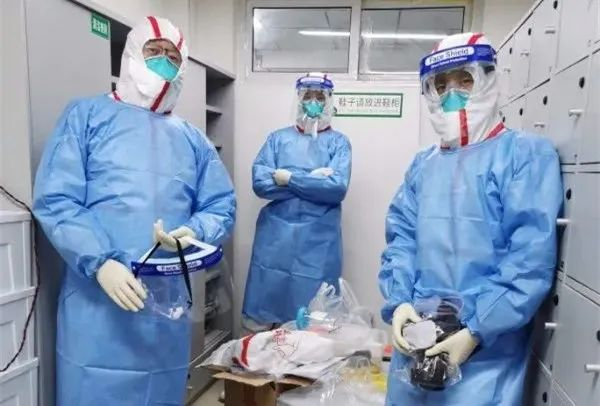
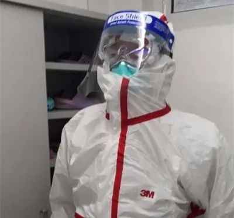

新冠肺炎遗体解剖已完成11例，死者肺部有黏液性分泌物
原文链接 备份链接 记者：金淼 “ 解剖团队所处的环境，病毒浓度最高，物资缺乏、实验室缺乏也需要引起重视。 ” 自2月16日，华中科技大学同济医学院法理学刘良教授带领团队开展第一例新冠肺炎死亡病例的解剖以来，截止到2月25日，国内专家已经 …
记者/韩谦 魏晓涵
*编辑/石爱华宋建华*

进行病理解剖的刘良团队
经历了一个多月的等待后，华中科技大学同济医学院法医病理学教授刘良带领的团队，于2月16日凌晨3点50分，完成了第一例新冠肺炎死亡病例的尸体解剖。
截止2月25日，专家团队一共完成了11例新冠肺炎死亡病例的病理解剖，其中刘良团队负责了9例，目前已有3例完成了病理的初步诊断。
刘良介绍，新冠肺炎的病变与SARS有类似之处，也有自己的特点。从目前的病理结果来看，一些死者的肺部切面上，能看到有黏液性的分泌物，他认为这是临床治疗需要警惕的地方——“在治疗上如果黏液成分没有化解，单纯用给氧的方式，可能达不到目的，有时候会起反作用。正压给的时候可能会把黏液推得更深更广，会加重患者的缺氧”。
日前，刘良教授和华中科技大学同济基础医学院病理学系主任王国平教授一同接受了媒体的采访。接下来，专家团队会将病理研究的初步结果和临床专家进行对接研究。

进入手术室进行尸检前需要全面防护

遗体捐献者最小52岁
记者：针对新冠肺炎的病理解剖工作进行的如何？目前完成了几例解剖？遗体捐赠者情况如何？
刘良：从16号到今天为止，我们的团队一共解剖了9例，上海的团队在武汉解剖了两例。遗体捐赠者男女比例差不多，年龄偏大，有60岁、70岁、也有80多岁的，最年轻的52岁。
**记者：**一般来说，想要得出比较科学的结论，需要进行多少例的综合分析？
王国平：从科学的角度来讲越多越好，目前一共解剖了11例，还是能在一定程度上说明问题的。
**记者：**接下来会不会倾向于寻找一些较年轻的死亡病例？
刘良：病理研究案例是多多益善的，不同的人有不同的个性的问题，（病理解剖研究）就是在个性问题上去找共性的问题。
我们希望看到这个病毒在不同的年龄段、不同的性别、不同的身体条件情况下有什么特点。哪些人容易发病，哪些人不容易发病，这个肯定是要往下做。
**记者：**尸检工作是在哪里进行的？
刘良：这次的尸检工作都是在医院的手术室完成的。在征求家属意见后，一般来说病人去世6-8个小时后就会展开解剖工作，有的会更晚一些。所有完成尸检的遗体都由殡仪馆的车送去火化。
**记者：**此前，申请研究还是花了不少时间的。目前研究状况是否有所改善，家属态度如何？
刘良：尸检一开始确实是花了很多精力，去要政策，还要找医院，还要跟家属做工作，所以相对来说起步比较难。
通过媒体的宣传，逝者家属也了解了病理解剖的意义，有临床医生跟我反映说，家属接受度比以前好。
现在，很多医院开始试探性地走这个（在医院进行病理解剖）模式，有不少医院在主动联系开展这个工作。我觉得将来不仅是金银潭和同济这两家医院的合作，会更多医院加入进来。

病理研究人员对样本进行研究
死者肺部有黏液性分泌物
**记者：**目前，是否有已经完成病理研究的案例？有何发现？
刘良：有3例病理诊断的初步结果已经出来了，更深入的检查，如免疫组化、特殊染色，还正在抓紧做。
从目前情况看，还是有比较重要的发现，但结论需进一步与临床专家进行沟通，看这些病变是临床上的治疗造成的，还是疾病本身造成的。
**记者：**从尸检情况来看，新冠病毒除了侵犯肺部之外，还有哪些器官受累？
刘良：新冠肺炎的病变目前看肯定不止损害肺，还包括免疫系统和身体其他器官，具体还要与临床医生交换意见。
**记者：**之前钟南山院士说，新冠肺炎患者遗体解剖发现肺的表现并不是严重的纤维化，有一部分肺泡存在，炎症很厉害，有大量的黏液。这些表现反映出了什么问题？这些发现对临床治疗有什么帮助？
刘良：我们在显微镜下，确实发现有些死者肺部切面上有黏液性的分泌物，这可以提醒临床治疗提高警惕。
肺在人体里是氧气和二氧化碳交换的场所，它的功能依赖于气道通畅，肺泡的功能要好。目前看，肺泡的功能可能受到损伤，气道又被黏液堵住，临床上会出现缺氧的表现。所以要改善人的缺氧状态，保持气道通畅，必须对黏液进行稀释或者溶解。实际上目前已经使用了这类药物，但可以再多试一试。
在临床治疗上，如果黏液成分没有化解，单纯用给氧的方式，可能达不到目的，有时候会起反作用。正压给氧的时候可能会把黏液推得更深更广，会加重患者的缺氧。临床上可能也在注意这个事情，但我们觉得还是要强调这个问题。
**记者：**通过病理检测发现病毒的确切感染部位、主要靶器官，是否可以明确新冠病毒传播机制？
刘良：病毒的传播途径目前不是病理上的问题，我们在做前面几例尸检的时候也做了不同器官和组织的核酸检测，是有些发现的，这些问题还需要进一步分析，因为不同病例做出来的结果不太一致。
**记者：**之前有学者提出，在一些重症患者中可能会暴发心肌炎或心碎综合征，通过解剖，这种可能性是否存在？
刘良：爆发心肌炎问题还待定，还要讨论。心碎综合征我认为可能性比较小。
**记者：**相关研究显示新冠病毒和SARS的同源性很高，通过遗体解剖，目前发现新冠肺炎的肺部表现和 SARS的区别大吗？有什么不同？
刘良：新冠肺炎跟SARS的病变有类似性，但也有它自己的特点，我们后期会做一些解读。

图为身着防护服的刘良教授，他参与了第一例新冠肺炎的解剖工作
解剖团队防护物资紧张
**记者：**目前我们的工作中还面临哪些困难？
刘良：尸检人员做解剖的防护非常重要，（解剖环境）相当于到辐射浓度最高的地方去。目前为止，防护物资都是我们从其它地方“化缘”来的，希望更多人关注我们这支“特种部队”。
**记者：**业界呼吁国内各大中心城市尽快建设符合甲级传染病标准的解剖室，控制及预防烈性传染病的规章制度也应进一步完善，您怎么看？
王国平：这次新冠病毒爆发提示我们在学科建设上要重视传染性疾病，特别是甲类传染病标准解剖室的建立，这是我们需要吸取教训的地方。
目前符合这种负压的P2、P3的尸体解剖室，SARS的时候在北京地坛医院和广东见过，其他地方基本没有。解剖室的问题应该提到议事日程上来，解剖室的不达标会导致解剖工作的延缓。
**【反侵权公告】本文由北京青年报在今日头条独家首发，未经授权，不得转载。**

6楼6床的病人走了| 深度报道

送别李文亮医生：愿天堂没有病毒| 深度报道


原文链接 备份链接 记者：金淼 “ 解剖团队所处的环境，病毒浓度最高，物资缺乏、实验室缺乏也需要引起重视。 ” 自2月16日，华中科技大学同济医学院法理学刘良教授带领团队开展第一例新冠肺炎死亡病例的解剖以来，截止到2月25日，国内专家已经 …
原文链接 备份链接 澎湃新闻 综合报道 2月16日，武汉。在法律政策允许下，两例新冠逝者遗体解剖工作在金银潭医院完成，由解剖获得的新冠肺炎病理，目前已被送检。 澎湃新闻记者 祝文博 编辑 张兆亿 视频来源 相关人士 责任编辑：周宽玮 据参 …
原文链接 备份链接 研究者正试图揭示新冠病毒的致病性、致死性机制，为临床治疗提供新依据，阶段结果是新冠病毒的致病特征与SARS相似，而进一步的结果或将由解剖揭开 2020年2月初，武汉金银潭医院隔离病区内，医护人员正在给新冠肺炎患者做治 …
原文链接 备份链接 “病理诊断是疾病诊断的金标准”2月16日凌晨3点50分，全国首例新冠病毒肺炎患者遗体解剖工作在武汉市金银潭医院顺利结束，由华中科技大学同济医学院法医病理学教授刘良及其团队完成，14小时后，他们又完成了第二例遗体解剖 …
原文链接 备份链接 2 月 17 日，《柳叶刀 · 呼吸医学》（_The Lancet Respiratory Medicine_）在线发表了首份基于尸检样本的新冠肺炎病理学报告。 该论文通讯作者之一为中科院院士、解放军总医院第五医学中心 …